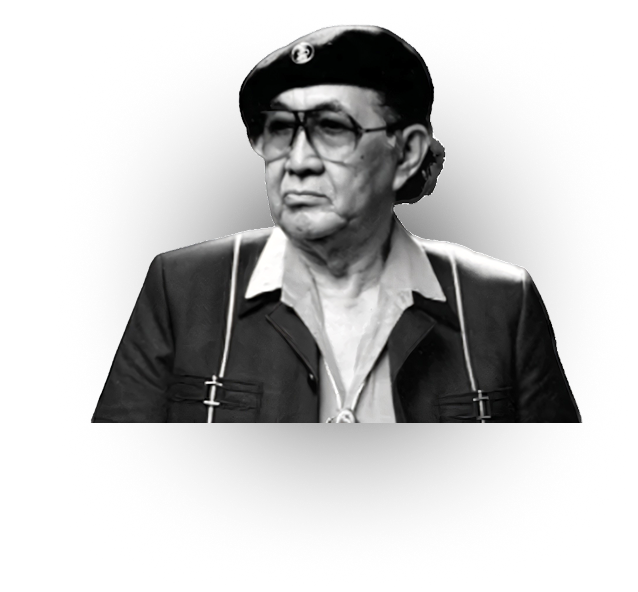
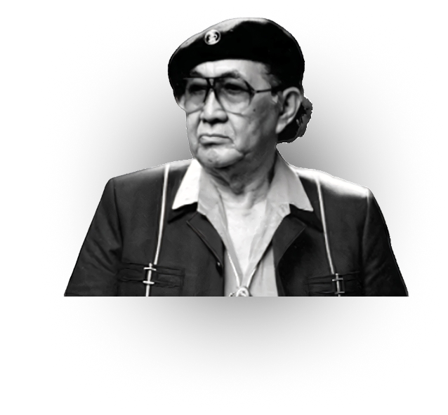

Lahir di Semarang, Jawa Tengah, pada tahun 1915, Basuki Abdullah mewarisi darah seni yang kental dari kakeknya, R. Abdullah Suriosubroto, yang juga seorang pelukis naturalis terkemuka. Sejak usia muda, lingkungan keluarga yang akrab dengan dunia seni dan kebudayaan memberikan pondasi yang kuat bagi bakatnya yang luar biasa. Pendidikan awal Basuki di Indonesia dilalui dengan cepat, namun minatnya yang tak terbendung pada kanvas dan kuas membawanya melintasi batas samudra untuk mendalami teknik-teknik seni rupa Eropa klasik. Pada tahun 1933, ia berkesempatan melanjutkan pendidikan formal di Akademi Seni Rupa Rijksakademie van Beeldende Kunsten di Amsterdam, Belanda. Momen ini merupakan titik balik, di mana bakat alaminya diasah melalui disiplin akademik yang ketat, membentuk gaya lukisannya yang kelak dikenal sebagai perpaduan sempurna antara Realisme dan Romantisme.
Basuki Abdullah
Biografi Singkat
 
